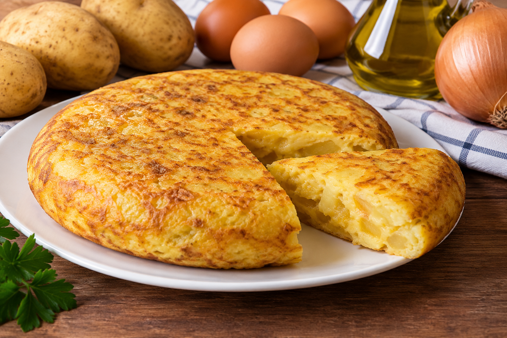

SU HISTORIA
¿De donde viene?
La tortilla de patata es uno de los platos más tradicionales y conocidos de la gastronomía española. Su origen exacto no se conoce con seguridad, aunque uno de los documentos históricos más conocidos la sitúa en Villanueva de la Serena, en Extremadura, en el año 1798. Se elabora principalmente con patatas, huevos, aceite de oliva y sal, aunque muchas personas también le añaden cebolla. Con el paso del tiempo, se convirtió en una receta muy popular porque sus ingredientes son económicos, fáciles de conseguir y permiten preparar una comida para varias personas. Actualmente, se puede encontrar en prácticamente toda España, tanto en los hogares como en los bares y restaurantes.
¿Quien la cocina en mi casa?
En mi casa, la tortilla de patata la prepara mi madre. Para hacerla, primero pela y corta las patatas en rodajas finas y, después, las cocina en una sartén con aceite de oliva. Mientras tanto, bate los huevos en un recipiente y añade una pizca de sal. Cuando las patatas están blandas, las mezcla con los huevos y vierte todo en una sartén para cocinar la tortilla por ambos lados. Lo que más me gusta es que queda dorada por fuera y jugosa por dentro. Además, es una receta casera que se prepara con ingredientes sencillos y que tiene un sabor delicioso.
¿Cuando se cocina en mi casa?
En mi casa, solemos comer tortilla de patata durante las comidas familiares, los fines de semana y en algunas ocasiones especiales. Es un plato muy práctico porque se puede preparar con antelación y comer tanto caliente como fría. También es ideal para llevar de excursión, comer en el campo o preparar un bocadillo. Cuando nos reunimos con familiares o amigos, la tortilla se puede cortar en pequeñas porciones para compartir entre todos. Es una comida que gusta a muchas personas y que forma parte de la cocina tradicional española. Por eso, la tortilla de patata es uno de los platos que más disfrutamos cuando comemos juntos.

PULSE AQUI PARA CONOCER MÁS SOBRE LA TORTILLA
INDICE